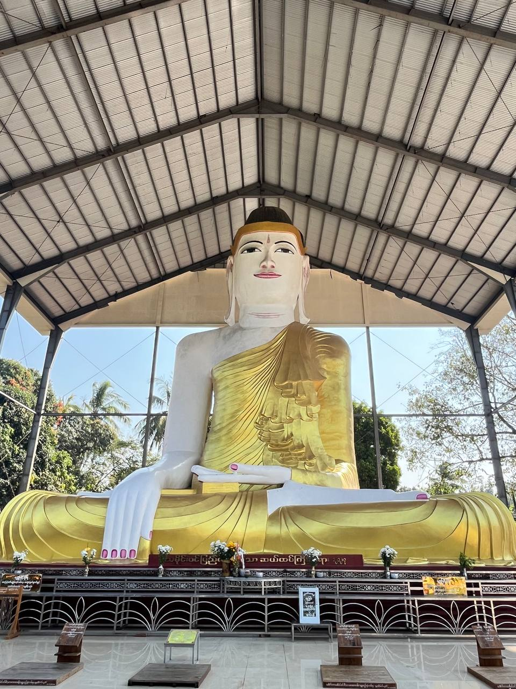
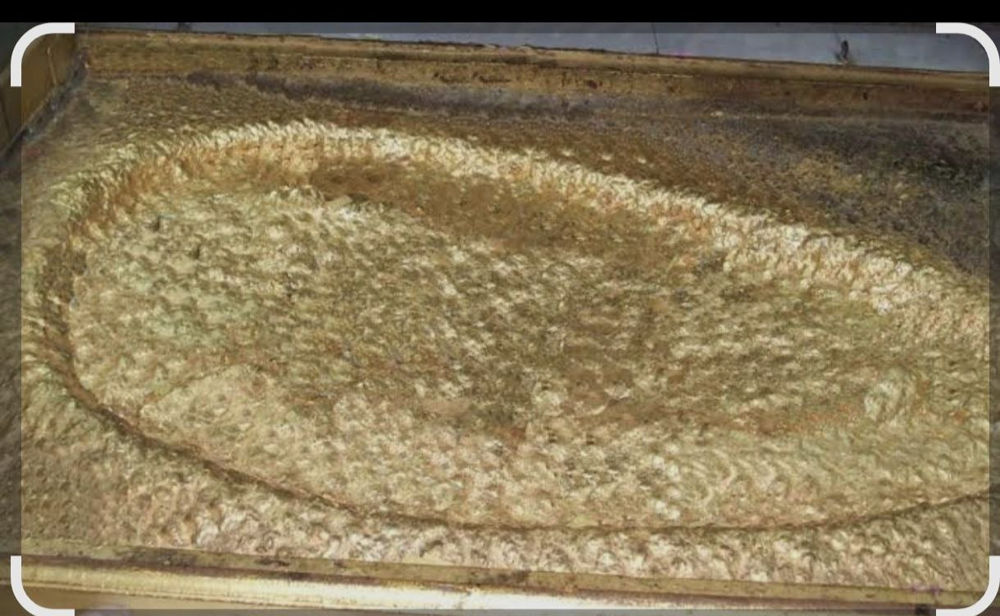
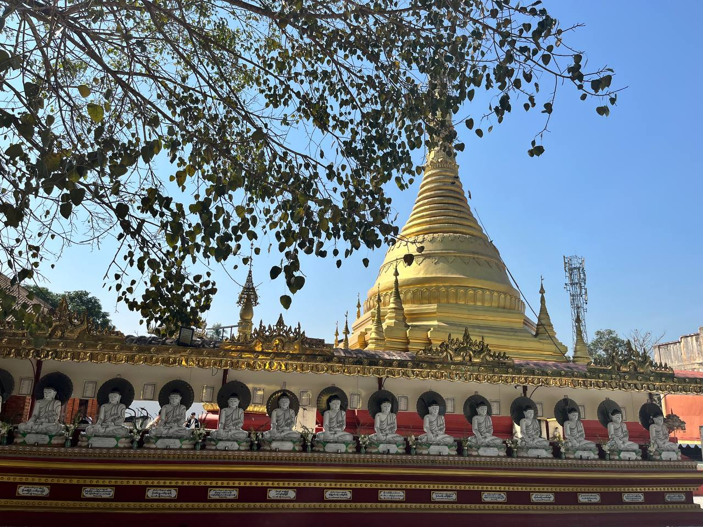

အတုမရှိ ရုပ်ပွားတော်မြတ် (၅) ဆူ
အတုမရှိ လောကချမ်းသာ
အတုမရှိ မဟာလာဘ
အတုမရှိ သိဒ္ဓိအောင်
အတုမရှိ သုခချမ်းသာ
အတုမရှိ အောင်တော်မူ
(မှတ်ချက် - အရပ်မျက်နှာအလိုက် တန်ဆောင်းများတွင် စံပယ်တော်မူပြီး အောင်မြေ၌ ဆုတောင်းနိုင်သည်)
ဗဟိုကိန်းဝပ်ရာနှင့် ပတ်လည်ရှိ ဘုရားများ
ဗဟို: ၁၀၈ ကွက် စက်လက္ခဏာတော် ပါရှိသော ခြေတော်ရာပုံတူ။
သီရိဓမ္မာသောကမင်း ရုပ်ပွားတော်။
နဝဝင်းဘုရားများနှင့် နေ့နံအလိုက် ကိုးကွယ်နိုင်သည့် ရုပ်ပွားတော်များ။
ရေကန်အလယ် နန်းဆောင်
အဓိက: ရှင်ဥပဂုတ္တမထေရ်မြတ် နန်းဆောင်။
ဗုဒ္ဓဝင်ဖြစ်စဉ် သရုပ်ဖော် ရုပ်လုံးရုပ်တုများ။
ထွက်ရပ်ပေါက် ပုဂ္ဂိုလ်ထူးများ၏ နန်းဆောင်များ။


